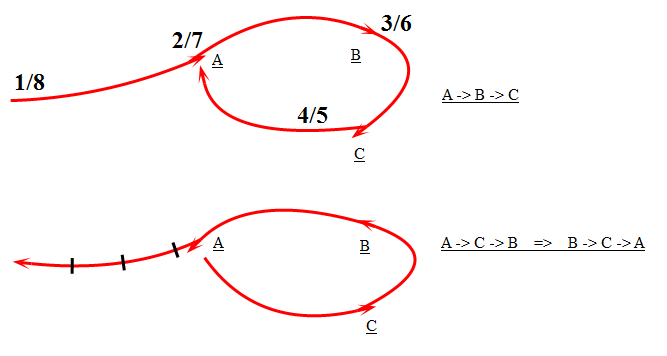
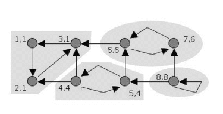
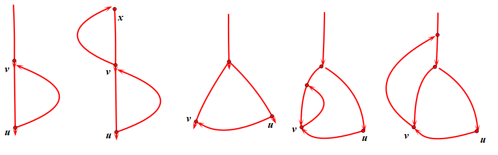

开心刷起题来吧！开涮对象——图论里的小小分支，连通分量
概念省略一堆：有向图 $G$ 、强连通（两两可达）、强连通分量（极大强连通子图）
转置图 $G^T$：每个边反向
求强连通分量
Korasaju算法
- 在图 $G$ 随便选择起点dfs，记录访问时间。
- 在图 $G^T$ 根据1得到的访问时间最大的点作为起点 dfs，得到若干个树。
- 每棵树在原图里都是一个强连通分量（由对称在转置图中同样也是）。
这个算法给人的感觉就是，顺毛疏一遍，逆毛疏一遍，结成团的就是一个强连通分量。

简单的图这样看，上面是原图。第一遍在图 $G$ 的 dfs 留下了时间戳，一条可行的路径是 $A\rightarrow B\rightarrow C$。第二遍在图 $G^T$ 中从时间最大点开始，可见没有回环的路就像是被一截一截锯掉，单点形成一个强连通分量。而 A 开始的路径是 $A\rightarrow C\rightarrow B$，可得在对称的 $G$ 中有可行的回路 $B\rightarrow C\rightarrow A$。综合可以得到 $A\rightarrow B\rightarrow C\rightarrow A$ 这个回路，即强连通分量。
POJ 2186 Popular Cows
题意：在一个有向图中，有多少个点能被所有的点到达。
分析：把所有的强连通分量缩点后，得到一个有向无环图。如果有唯一的出度为0的点，则看这个点的大小（缩点前的点数）即是答案。如果不唯一，则至少有两个点 x，y 出度为 0，则 x 不能到达 y，说明 y 不是答案。同理，x 也不是答案。
变量说明：
v[]原图w[]转置图a[]时钟fn缩点后图上的点数flag[]能缩成同一点的点有一样的flag值tuan[]同一flag值的点有多少个out[]缩点后的点的出度
1 | /*-------------------------------------------- |
POJ 1236 Network of Schools
题意：信息具有传递性，传递方向即有向图的方向。要使信息传遍全图，至少在多少个点内传入信息？若只需在一个点内传入信息，至少要连几条边？
歪路：第一问找入度为 0 的点；第二问找出度为 0 的点。
反例：由一个环 A 传递到另一个环B，没有入度出度为 0 的点，但是至少要在环 A 传入信息。第二问，至少要建一条边 B 到 A 回传。
分析：环可以缩为一点，其内部可以相互传递，对于外部来说相当于一个点。得到一个新的有向无环图后，第一问即入度为 0 的点。假设存在 a 个起点（入度为 0），b 个终点（出度为 0），为使得信息可以传递，需引入 a 条边到起点，从终点引出 b 个终点。这些边的另一个端点是随意的（只要不是自身），但为了尽量减少新建的边，最好将边从终点引到起点，其余的再随便连。因此需要连 max(a,b) 条边。
注意特判一下只有一个连通块的情况！（不要问我怎么知道的）
代码和上面差不多。略。
Tarjan算法
在dfs过程中，每个点维护该点的两个值(dfn,low)dfn[i]: 表示点i被访问到的时间low[i]: 点i可达点集的最小dfn

1 | void Tarjan(u) { |
若有一个子图的 low[i] 值相同，则这个子图即为一个强连通分量。可以考虑该子图中的任何一点j，设 low[j]=a=dfn[i]，则 j 可以到达 i 点；同时 dfn[i]=a<=dfn[j]，即 j 是经 i 点dfs得到的，则 i 可以到达 j 点。 i 点可以到达子图中的任意一点并返回至 i 点。因此该子图是强连通的。且有 low[i]=dfn[i]。
已经确认为强连通分量的子图已经被剔除，不会影响剩下的图。因为已经被访问过，又不在栈中，所以已经走远。
讨论 第九行的注释也是可行的？1
2else if (v in stack)
low[u] = min(low[u], dfn[v]) => low[u] = min(low[u], low[v])low[i] 是点 i 可达点集的最小dfn，且 dfn[i] 和 i 是双射的，记 $dfn^{-1}[dfn[i]]=i$。如果 low[v]=a，则说明v可以到达 $dfn^{-1}[a]$，而 u 又能到达 v，故 u 也能到达 $dfn^{-1}[a]$ 则 low[v]<low[u] 时，确实可以让 low[u] 取到 low[v]。而 dfn[v]>=low[v]，不禁要怀疑原来的式子是不是不够紧？
想了想，其实这两种方法求出的强连通分量是相同的，只是过程有些不一样。给出下面 5 幅图，dfs 顺序为从上到下，从左到右。要保证 v 比 u 先入栈，且 v 可能比 u 的根更早入栈（图1，2），或更晚（图3，4，5），且 v 可能回溯成环（图2，4，5），实际上图3，4不会存在，因为 v 随着自己的强连通分量被弹出栈了！虽然 u 的 low 值会被带歪，但是可以保证的是，只有能囊括所有最大强连通分量的根才会出现 low 值等于 dfn 值，并提出该强连通分量。

如果哪天遇到反例了一定要告诉我啊~
POJ 3180 The Cow Prom
求有向图中点数大于 2 的强连通分量的个数。1
2
3
4
5
6
7
8
9
10
11
12
13
14
15
16
17
18
19
20
21
22
23
24
25
26
27
28
29
30
31
32
33
34
35
36
37
38
39
40
41
42
43
44
45
46
47
48
49
50
51
52
53
54
55
56
57
58
59
60/*--------------------------------------------
* File Name: POJ 3180
* Author: Danliwoo
* Mail: Danliwoo@outlook.com
* Created Time: 2016-07-06 12:47:20
--------------------------------------------*/
using namespace std;
int n, m, ans;
std::vector<int> v[N];
int vis[N], dfn[N], low[N], stk[N], top, ins[N], clk;
void Tarjon(int x){
dfn[x] = low[x] = clk++;
stk[top++] = x;
vis[x] = ins[x] = 1;
for(int j = 0;j < v[x].size();j++){
int y = v[x][j];
if(!vis[y]){
Tarjon(y);
low[x] = min(low[x], low[y]);
} else if(ins[y]){
low[x] = min(low[x], dfn[y]);
}
}
if(low[x] == dfn[x]){
int sz = 0;
do {
ins[stk[top-1]] = 0;
top--;
sz++;
} while(stk[top] != x);
if(sz > 1) ans++;
}
}
int main()
{
while(~scanf("%d%d", &n, &m)){
memset(v, 0, sizeof(v));
for(int i = 0;i < m;i++){
int x, y;scanf("%d%d", &x, &y);
x--; y--;
v[x].push_back(y);
}
memset(vis, 0, sizeof(vis));
memset(ins, 0, sizeof(ins));
top = ans = clk = 0;
for(int i = 0;i < n;i++) if(!vis[i])
Tarjon(i);
printf("%d\n", ans);
}
return 0;
}
POJ 2762 Going from u to v or from v to u?
题意：给出一个有向图，若从中任取两点 u, v，若 u 能到 v 或者 v 能到 u，则输出 Yes， 否则输出 No。
分析：强连通分量缩点，其内部可互达。考虑缩点后的新图，为满足条件，则需要 dfs 出一条长链，链上的任意两点均可满足条件，只要链长为 n 即输出 Yes。求长链的过程即拓扑排序，每次从唯一的入度为 0 的点开始 dfs，若不唯一或不存在这样的点，均表示不能拉成一条长链。